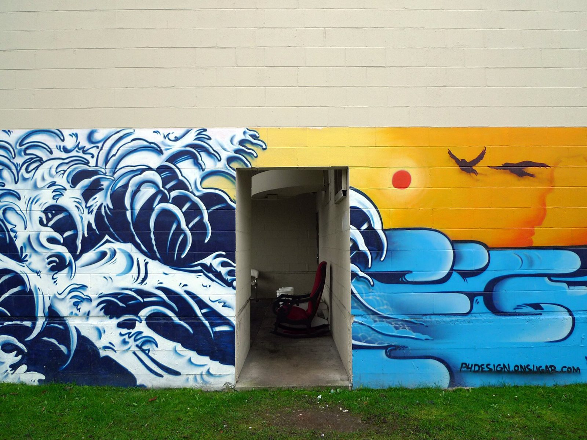
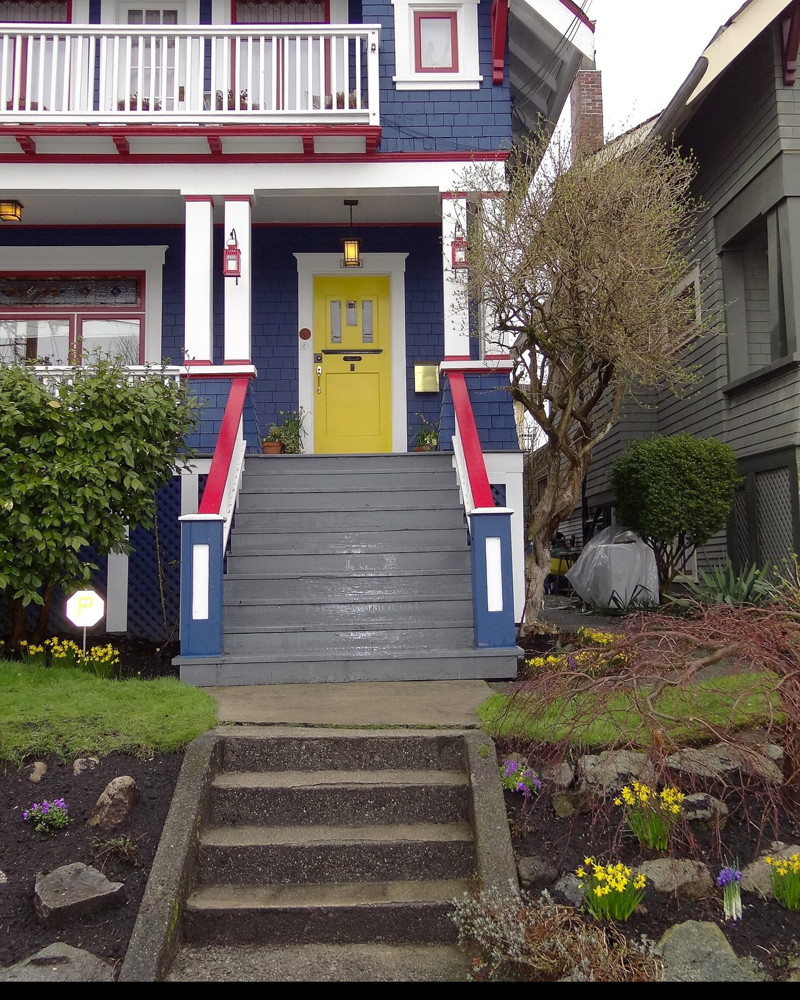

Mount Pleasant is the neighbourhood that rises from False Creek up to the point where Broadway, Kingsway and Main Street meet. Ask three people where it ends and you will get three answers, but the part everyone agrees on runs roughly from the creek to 16th Avenue, and from Cambie across to Clark. It has been a village longer than Vancouver has been a city, and it is about to get its own subway station. That combination, old bones and new transit, is the whole story of why people want to live here.
A village before there was a city.
The name dates to 1888. According to the City of Vancouver's own history, the area was named after the Irish birthplace of the wife of H.V. Edmonds, a New Westminster council clerk who owned much of the original land. The settlement grew around Brewery Creek, and Heritage Vancouver notes it is the only Vancouver community that developed around a creek. The water is what drew the industry: by 1904 the area had a tannery, two slaughterhouses, four breweries and a train station. The creek is buried now, but its name lives on in the Brewery Creek label you will see on buildings and businesses along Main.
The village centre was the triangle where Main, Broadway and Kingsway cross. That intersection sits on what Heritage Vancouver describes as an ancient Indigenous trail, and the streetcar turned it into a place where people could work, shop and live within a few blocks. Thirteen buildings around it are on the city's Heritage Register, including the Mason Block from 1905, believed to be Vancouver's earliest concrete building, and the Williams Block from 1910. Walk Main Street between 6th and 12th today and you are walking through one of the oldest commercial strips in the city.

City Hall, and the pocket around it.
The western side of Mount Pleasant is anchored by Vancouver City Hall at Cambie and 12th. It opened on December 4, 1936, designed by Townley and Matheson and built during the Depression as a make-work project and a statement for a newly enlarged city. The City describes the style as the transition point between Art Deco and the plainer Moderne that followed. Inside there are terrazzo floors, marble walls and gold-leafed ceilings, and the building has been a designated heritage site since 1976. It is the kind of landmark that gives a neighbourhood a centre of gravity.
The blocks between City Hall and Main are the quiet part of Mount Pleasant. Tree lined avenues in the teens, a mix of original houses, character conversions and newer townhomes, with Simon Fraser Elementary on West 15th. The school has been part of the neighbourhood since 1909, when it opened on Manitoba Street, and it now sits at 100 West 15th Avenue. Mount Pleasant Park and Robson Park at 15th and Kingsway are the local green space, and the Mount Pleasant Community Centre is near Main and Kingsway.

Two rapid transit lines, one of them brand new.
Transit is the practical reason Mount Pleasant keeps climbing the list. The Canada Line has stopped at Broadway-City Hall since 2009, which puts downtown, the airport and Richmond a short ride from the western half of the neighbourhood. The bigger change is the Broadway Subway, the extension of the Millennium Line from VCC-Clark west to Arbutus. Two of its stations land in Mount Pleasant: a new interchange at Broadway-City Hall, and Mount Pleasant Station at Main and Broadway. The project reported that train testing began in May 2026, with the last of the street detours being lifted along Broadway. When it opens, the neighbourhood will have a subway stop at each end of its main street.

The Broadway Plan, in plain terms.
On June 22, 2022, Vancouver council approved the Broadway Plan, a 30-year framework for the area between Clark Drive and Vine Street, from 1st Avenue to 16th. It covers Mount Pleasant, Fairview and Kitsilano. The plan allows for up to 30,000 additional homes and space for about 42,000 jobs around the new subway, with $96 million earmarked for parks and 400 new or renewed childcare spaces in the first decade. Most of the new housing is meant to be rental, and the plan carries tenant protections including a right of first refusal for existing renters.
What that means for an owner is simple. The major corridors, Broadway and the blocks nearest the stations, will get taller. The residential avenues in between are covered by the plan too, but the character of the tree lined streets south of Broadway is not going to change overnight. If you are buying a house or townhome here, you are buying into a neighbourhood with a very well documented future, which is more than most of the city can say.
Main Street, and the murals.
Main Street is the neighbourhood's living room. The stretch from Broadway south to 16th is independent restaurants, coffee, vintage and record shops. It has stayed local while much of the city has not, partly because the buildings are old and small and suit independent businesses.
The murals are the other thing people notice. The Vancouver Mural Festival started in Mount Pleasant in 2016 and, over nine summers, added roughly 500 murals across the city, most of them concentrated in the alleys and side walls between Main and Kingsway. The festival itself wound down in January 2025, but the walls did not go anywhere. Walking the lanes between 7th and 12th is still one of the better free afternoons in Vancouver.

What it is like to live here.
Mount Pleasant is a walking neighbourhood in a city that mostly is not. From the avenues between Cambie and Main you can reach either high street on foot in under ten minutes, get to the Canada Line in about the same, and be at Vancouver General Hospital or City Hall without a car. The housing stock is mixed in a way that keeps the streets interesting: 1900s houses next to 1990s heritage conversions next to new townhomes, most of them on lots with real gardens. It is family friendly without being suburban, and it is central without being downtown.
The trade-offs are the usual ones for a neighbourhood people want. Parking is tight, the main corridors are busy, and there will be construction along Broadway for a few more years. What you get in return is a place with well over a century of history, two rapid transit lines, a school you can walk to, and a main street that still feels like it belongs to the people who live there.

Frequently asked questions.
Where exactly is Mount Pleasant?
South of False Creek, between roughly Cambie Street and Clark Drive, running up to about 16th Avenue. The historic centre is the Main, Broadway and Kingsway intersection, and City Hall at Cambie and 12th marks the western edge.
Is Mount Pleasant good for families?
Yes, particularly the residential avenues between Cambie and Main. Simon Fraser Elementary is in the neighbourhood, Mount Pleasant Park and Robson Park are close, and the streets south of Broadway are quiet and tree lined.
How is the transit?
The Canada Line stops at Broadway-City Hall now. The Broadway Subway will add Mount Pleasant Station at Main and Broadway and turn Broadway-City Hall into an interchange, with train testing underway as of spring 2026.
What is the Broadway Plan going to change?
More height and density along Broadway and near the stations over 30 years, with most new homes planned as rental. The plan was approved in June 2022 and includes funding for parks and childcare in the area.
Sources: City of Vancouver, Mount Pleasant history · Heritage Vancouver, Heart of Mount Pleasant · City of Vancouver, City Hall architecture · City of Vancouver, Broadway Plan approved · Broadway Subway Project news · Vancouver School Board heritage archive, Simon Fraser Elementary · Daily Hive, Vancouver Mural Festival. Photographs via Wikimedia Commons under the Creative Commons licences noted in each caption.